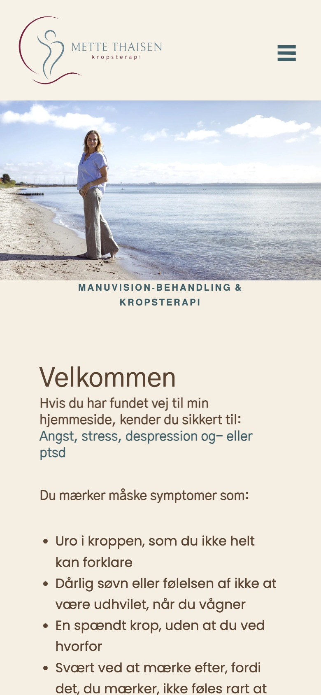
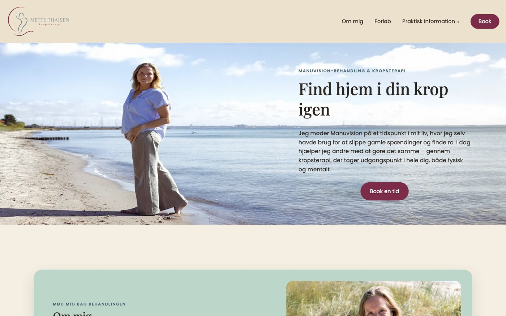
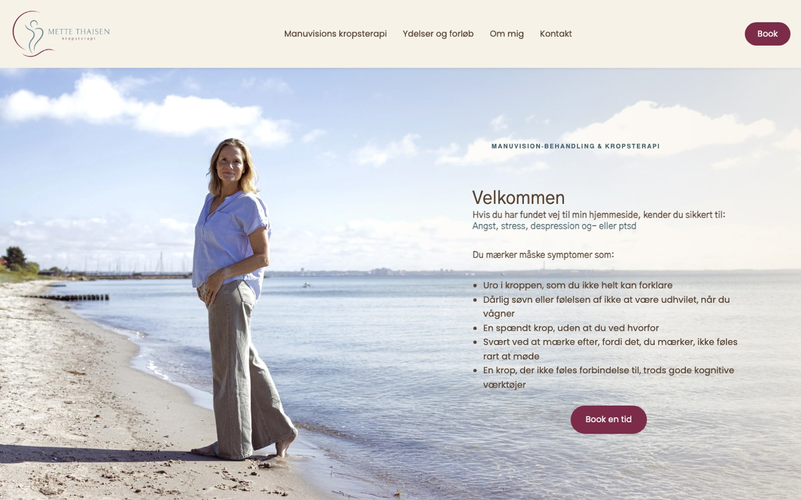
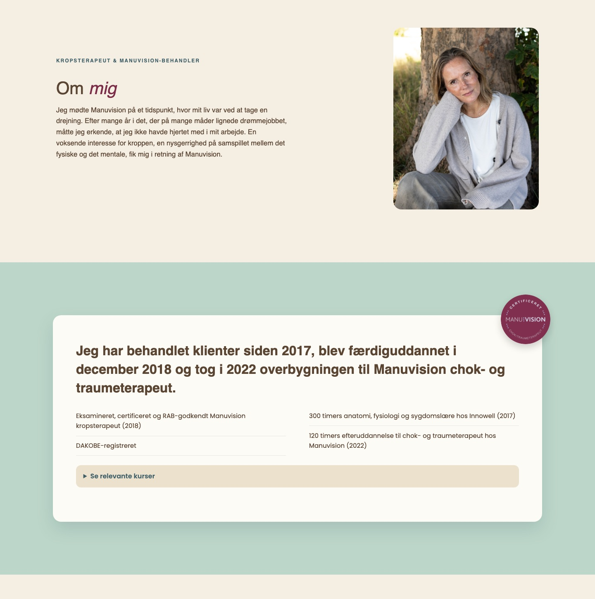

Professionelt projekt · Kundeopgave
Webdesign · 2026
Mette Thaisen
En ny hjemmeside til Mette Thaisen Kropsterapi, en Manuvision krops- og traumeterapeut med klinik i Snekkersten og på Frederiksberg. Sitet er lavet til rigtig, professionel brug: klienter skal kunne forstå behandlingen, se priser og booke en tid.
Kunde
Mette Thaisen Kropsterapi
Manuvision-behandling
Min rolle
Design og udvikling af hele hjemmesiden
Værktøjer
HTML, CSS, JavaScript, Git og GitHub
Omfang
7 sider: forside, Manuvision, forløb, priser, om mig, kontakt og privatlivspolitik
Udfordringen
Mettes klienter er ofte pressede af stress, angst eller traumer. Siden skulle føles tryg og føre naturligt videre til en booking.
Processen
Brief med kunden, struktur efter klientens spørgsmål, første version og derefter løbende feedbackrunder over seks uger.
Resultatet
En hjemmeside med 7 sider, eget fotoshoot og direkte link til bookingsystemet, lavet til rigtige klienter.
Min rolle
Hele hjemmesiden, fra idé til færdig side
Jeg arbejdede alene og direkte med kunden, så jeg stod for hele forløbet:
- Afklaring af behov og indhold sammen med Mette.
- Struktur, sitemap og visuelt design.
- Udvikling i HTML, CSS og JavaScript, responsivt på mobil, tablet og desktop.
- Feedbackrunder, rettelser og versionsstyring i Git.
Brief · Opgaven
En rolig vej fra første besøg til booking
Mettes klienter er ofte pressede af stress, angst eller et nervesystem, der har været på overarbejde for længe. Derfor skulle hjemmesiden føles rolig og tryg, være let at overskue og føre naturligt videre til en booking.
"Book en tid" går direkte til Mettes bookingsystem, så klienter kan vælge klinik og tid uden at skulle skrive eller ringe først.

Struktur · Sitemap
Svar på de spørgsmål, en ny klient har
Siderne er bygget op efter de spørgsmål, en ny klient typisk stiller sig selv, før de tør booke.
Spørgsmål 1
Er det her noget for mig?
Forsiden og siden om Manuvision forklarer, hvad behandlingen er, og hvem den hjælper.
Spørgsmål 2
Hvad sker der, og hvad koster det?
Forløb og priser viser trin for trin, hvad man kan forvente.
Spørgsmål 3
Kan jeg stole på hende?
Om mig viser uddannelse, certificeringer og klientudtalelser.
Iterationer · Feedback fra kunden
Fra første version til færdig side
Den første version var klar i starten af september. Derefter justerede jeg siden løbende ud fra Mettes feedback i godt seks uger, styret i Git.


- Teksten taler til klienten, ikke om behandlerenForsiden starter nu med de symptomer, klienten kan genkende, fx uro i kroppen og dårlig søvn, i stedet for en generel tekst.
- Menuen bruger klientens ord"Praktisk information" blev til tydelige menupunkter som "Ydelser og forløb".
- Ny sektion: "Har du mistet balancen?"lige under heroen, så man hurtigt kan mærke, om behandlingen er noget for en.
- Ægte billeder fra et fotoshootpå stranden og i klinikken gør siden mere personlig og tillidsvækkende.
- Klientudtalelser i en "Læs mere"-harmonikaså siderne ikke bliver tunge at læse.
Designet
Ro, natur og tillid
Udtrykket bygger på billeder fra fotoshootet, bløde farver og masser af luft. Teksterne er delt op i korte afsnit, så de er lette at læse for en, der i forvejen er presset.
Om mig-siden viser Mettes uddannelse og certificeringer tydeligt, så nye klienter kan se, at de er i trygge hænder.

Klar til rigtig brug
Mere end et flot design
- Privatlivspolitik og tydelige kontaktoplysninger.
- Responsivt design, testet og rettet på mobil, tablet og desktop.
- Billeder i flere størrelser og beskrivende filnavne og alt-tekster for hurtighed og SEO.
- Direkte link til Mettes bookingsystem og sociale medier.
7 sider · 6 uger
fra første version til færdig side, bygget til at blive brugt af rigtige klienter.
Det lærte jeg
- At oversætte kundens ønsker og feedback til konkrete designændringer.
- At skrive til brugerens situation og ikke kun om ydelsen.
- At holde styr på mange små rettelser med Git.
Næste gang
- Lave wireframes og få dem godkendt, før jeg koder, så der bliver færre runder.
- Brugerteste med et par af Mettes klienter og måle, hvor mange der booker via siden.
Prøv selv
Hele hjemmesiden
Klik rundt på alle siderne herunder. "Book en tid" åbner Mettes bookingsystem i en ny fane.